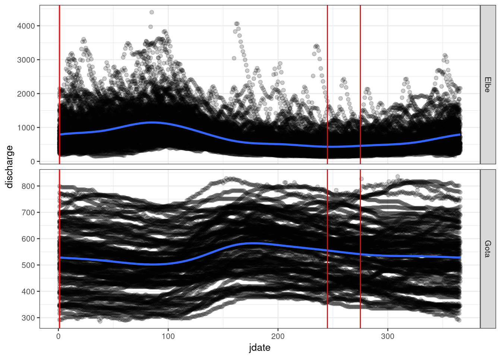

1 Loading the Data
We begin by loading the Elbe and Gota flow time series and then calculating annual minimum flow for each. We are purposefully choosing to use the calendar year (beginning January 1) for this analysis rather than water year (beginning October 1 or November 1 for many northern hemisphere countries) because the water year breakpoint occurs near the seasonal minimum flow.
library(tidyverse)
library(hydroDrought)
library(lubridate)
### Filter to the rivers and create columns for dates
flow_df <- international %>%
filter(river == "Elbe" | river == "Gota") %>%
select(river, data) %>%
unnest(cols = data) %>%
mutate(
year = year(time),
jdate = yday(time)
) %>%
print()## # A tibble: 114,031 x 5
## river time discharge year jdate
## <chr> <date> <dbl> <dbl> <dbl>
## 1 Gota 1850-01-01 506 1850 1
## 2 Gota 1850-01-02 506 1850 2
## 3 Gota 1850-01-03 502 1850 3
## 4 Gota 1850-01-04 502 1850 4
## 5 Gota 1850-01-05 502 1850 5
## 6 Gota 1850-01-06 502 1850 6
## 7 Gota 1850-01-07 496 1850 7
## 8 Gota 1850-01-08 496 1850 8
## 9 Gota 1850-01-09 496 1850 9
## 10 Gota 1850-01-10 496 1850 10
## # … with 114,021 more rows### Group by year and river and then calculate min and mean flow
flow_annual <- flow_df %>%
group_by(river, year) %>%
summarise(min_m3s = min(discharge, na.rm=TRUE), mean_m3s=mean(discharge, na.rm=TRUE), .groups = "drop_last") %>%
print()## # A tibble: 313 x 4
## # Groups: river [2]
## river year min_m3s mean_m3s
## <chr> <dbl> <dbl> <dbl>
## 1 Elbe 1875 230 583.
## 2 Elbe 1876 237 912.
## 3 Elbe 1877 296 695.
## 4 Elbe 1878 296 636.
## 5 Elbe 1879 327 805.
## 6 Elbe 1880 330 823.
## 7 Elbe 1881 327 918.
## 8 Elbe 1882 345 735.
## 9 Elbe 1883 298 724.
## 10 Elbe 1884 292 680.
## # … with 303 more rows # Linear trend for Elbe River
Consider the annual minimum flow for the Elbe river (Fig. 7.8). By fitting a line of form Eq 7.43, the estimated slope is -0.0408 m3/s per year, with a 95% confidence interval of -0.34 to 0.26 m3/s per year. As you can see, we are unclear whether the true trend is positive or negative and this is reflected in a p-value of 0.79 for the t-test of the slope coefficients. Because this p-value is well above 0.05, we accept the null hypothesis (Ho) that there is likely no significant trend in annual minimum flow for the Elbe River.
### Filter to only the Elbe River
elbe_annual <- flow_annual %>%
filter(river == "Elbe")
### Create an OLS linear trend model
elbe_lm <- lm(min_m3s~year, data = elbe_annual)
### Show results
summary(elbe_lm)##
## Call:
## lm(formula = min_m3s ~ year, data = elbe_annual)
##
## Residuals:
## Min 1Q Median 3Q Max
## -144.497 -54.136 -7.038 53.504 236.888
##
## Coefficients:
## Estimate Std. Error t value Pr(>|t|)
## (Intercept) 350.15092 297.03574 1.179 0.24
## year -0.04078 0.15257 -0.267 0.79
##
## Residual standard error: 76.1 on 142 degrees of freedom
## Multiple R-squared: 0.000503, Adjusted R-squared: -0.006536
## F-statistic: 0.07146 on 1 and 142 DF, p-value: 0.7896### Insert columns for trend fit and residuals
elbe_annual <- elbe_annual %>%
mutate(fitted = fitted(elbe_lm)) %>%
mutate(resid = resid(elbe_lm)) %>%
print()## # A tibble: 144 x 6
## # Groups: river [1]
## river year min_m3s mean_m3s fitted resid
## <chr> <dbl> <dbl> <dbl> <dbl> <dbl>
## 1 Elbe 1875 230 583. 274. -43.7
## 2 Elbe 1876 237 912. 274. -36.6
## 3 Elbe 1877 296 695. 274. 22.4
## 4 Elbe 1878 296 636. 274. 22.4
## 5 Elbe 1879 327 805. 274. 53.5
## 6 Elbe 1880 330 823. 273. 56.5
## 7 Elbe 1881 327 918. 273. 53.6
## 8 Elbe 1882 345 735. 273. 71.6
## 9 Elbe 1883 298 724. 273. 24.6
## 10 Elbe 1884 292 680. 273. 18.7
## # … with 134 more rows### Create dataframe for confidence interval and predition interval
new_data <- data.frame(year = seq(1865, 2025, 1))
elbe_conf <- predict(elbe_lm, newdata=new_data, interval = "confidence", level = 0.95) %>%
as.data.frame() %>%
bind_cols(new_data) %>%
mutate(interval = "Confidence", level = 0.95) %>%
print()## fit lwr upr year interval level
## 1 274.0878 246.4956 301.6801 1865 Confidence 0.95
## 2 274.0470 246.7231 301.3710 1866 Confidence 0.95
## 3 274.0063 246.9499 301.0626 1867 Confidence 0.95
## 4 273.9655 247.1760 300.7549 1868 Confidence 0.95
## 5 273.9247 247.4014 300.4480 1869 Confidence 0.95
## 6 273.8839 247.6260 300.1418 1870 Confidence 0.95
## 7 273.8431 247.8498 299.8364 1871 Confidence 0.95
## 8 273.8023 248.0728 299.5318 1872 Confidence 0.95
## 9 273.7615 248.2950 299.2281 1873 Confidence 0.95
## 10 273.7208 248.5163 298.9252 1874 Confidence 0.95
## 11 273.6800 248.7367 298.6233 1875 Confidence 0.95
## 12 273.6392 248.9562 298.3222 1876 Confidence 0.95
## 13 273.5984 249.1747 298.0221 1877 Confidence 0.95
## 14 273.5576 249.3922 297.7230 1878 Confidence 0.95
## 15 273.5168 249.6088 297.4249 1879 Confidence 0.95
## 16 273.4761 249.8243 297.1278 1880 Confidence 0.95
## 17 273.4353 250.0387 296.8319 1881 Confidence 0.95
## 18 273.3945 250.2520 296.5370 1882 Confidence 0.95
## 19 273.3537 250.4641 296.2433 1883 Confidence 0.95
## 20 273.3129 250.6751 295.9508 1884 Confidence 0.95
## 21 273.2721 250.8848 295.6595 1885 Confidence 0.95
## 22 273.2314 251.0932 295.3695 1886 Confidence 0.95
## 23 273.1906 251.3003 295.0808 1887 Confidence 0.95
## 24 273.1498 251.5061 294.7935 1888 Confidence 0.95
## 25 273.1090 251.7105 294.5075 1889 Confidence 0.95
## 26 273.0682 251.9133 294.2231 1890 Confidence 0.95
## 27 273.0274 252.1147 293.9401 1891 Confidence 0.95
## 28 272.9866 252.3145 293.6587 1892 Confidence 0.95
## 29 272.9459 252.5127 293.3790 1893 Confidence 0.95
## 30 272.9051 252.7093 293.1009 1894 Confidence 0.95
## 31 272.8643 252.9041 292.8245 1895 Confidence 0.95
## 32 272.8235 253.0970 292.5500 1896 Confidence 0.95
## 33 272.7827 253.2882 292.2773 1897 Confidence 0.95
## 34 272.7419 253.4774 292.0065 1898 Confidence 0.95
## 35 272.7012 253.6646 291.7377 1899 Confidence 0.95
## 36 272.6604 253.8497 291.4711 1900 Confidence 0.95
## 37 272.6196 254.0327 291.2065 1901 Confidence 0.95
## 38 272.5788 254.2134 290.9442 1902 Confidence 0.95
## 39 272.5380 254.3919 290.6842 1903 Confidence 0.95
## 40 272.4972 254.5679 290.4266 1904 Confidence 0.95
## 41 272.4564 254.7415 290.1714 1905 Confidence 0.95
## 42 272.4157 254.9125 289.9189 1906 Confidence 0.95
## 43 272.3749 255.0808 289.6690 1907 Confidence 0.95
## 44 272.3341 255.2464 289.4218 1908 Confidence 0.95
## 45 272.2933 255.4091 289.1775 1909 Confidence 0.95
## 46 272.2525 255.5688 288.9362 1910 Confidence 0.95
## 47 272.2117 255.7255 288.6980 1911 Confidence 0.95
## 48 272.1710 255.8789 288.4630 1912 Confidence 0.95
## 49 272.1302 256.0291 288.2313 1913 Confidence 0.95
## 50 272.0894 256.1758 288.0030 1914 Confidence 0.95
## 51 272.0486 256.3190 287.7782 1915 Confidence 0.95
## 52 272.0078 256.4585 287.5571 1916 Confidence 0.95
## 53 271.9670 256.5942 287.3399 1917 Confidence 0.95
## 54 271.9262 256.7260 287.1265 1918 Confidence 0.95
## 55 271.8855 256.8537 286.9173 1919 Confidence 0.95
## 56 271.8447 256.9772 286.7122 1920 Confidence 0.95
## 57 271.8039 257.0963 286.5115 1921 Confidence 0.95
## 58 271.7631 257.2109 286.3153 1922 Confidence 0.95
## 59 271.7223 257.3210 286.1237 1923 Confidence 0.95
## 60 271.6815 257.4262 285.9369 1924 Confidence 0.95
## 61 271.6408 257.5265 285.7550 1925 Confidence 0.95
## 62 271.6000 257.6217 285.5783 1926 Confidence 0.95
## 63 271.5592 257.7116 285.4067 1927 Confidence 0.95
## 64 271.5184 257.7962 285.2406 1928 Confidence 0.95
## 65 271.4776 257.8753 285.0800 1929 Confidence 0.95
## 66 271.4368 257.9486 284.9250 1930 Confidence 0.95
## 67 271.3960 258.0162 284.7759 1931 Confidence 0.95
## 68 271.3553 258.0778 284.6328 1932 Confidence 0.95
## 69 271.3145 258.1332 284.4957 1933 Confidence 0.95
## 70 271.2737 258.1825 284.3649 1934 Confidence 0.95
## 71 271.2329 258.2253 284.2405 1935 Confidence 0.95
## 72 271.1921 258.2617 284.1226 1936 Confidence 0.95
## 73 271.1513 258.2915 284.0112 1937 Confidence 0.95
## 74 271.1106 258.3145 283.9066 1938 Confidence 0.95
## 75 271.0698 258.3307 283.8089 1939 Confidence 0.95
## 76 271.0290 258.3400 283.7180 1940 Confidence 0.95
## 77 270.9882 258.3423 283.6341 1941 Confidence 0.95
## 78 270.9474 258.3375 283.5573 1942 Confidence 0.95
## 79 270.9066 258.3256 283.4877 1943 Confidence 0.95
## 80 270.8659 258.3065 283.4252 1944 Confidence 0.95
## 81 270.8251 258.2802 283.3699 1945 Confidence 0.95
## 82 270.7843 258.2467 283.3218 1946 Confidence 0.95
## 83 270.7435 258.2059 283.2811 1947 Confidence 0.95
## 84 270.7027 258.1579 283.2475 1948 Confidence 0.95
## 85 270.6619 258.1026 283.2212 1949 Confidence 0.95
## 86 270.6211 258.0401 283.2022 1950 Confidence 0.95
## 87 270.5804 257.9705 283.1903 1951 Confidence 0.95
## 88 270.5396 257.8937 283.1855 1952 Confidence 0.95
## 89 270.4988 257.8098 283.1878 1953 Confidence 0.95
## 90 270.4580 257.7189 283.1971 1954 Confidence 0.95
## 91 270.4172 257.6211 283.2133 1955 Confidence 0.95
## 92 270.3764 257.5165 283.2363 1956 Confidence 0.95
## 93 270.3357 257.4052 283.2661 1957 Confidence 0.95
## 94 270.2949 257.2873 283.3024 1958 Confidence 0.95
## 95 270.2541 257.1629 283.3453 1959 Confidence 0.95
## 96 270.2133 257.0321 283.3945 1960 Confidence 0.95
## 97 270.1725 256.8950 283.4500 1961 Confidence 0.95
## 98 270.1317 256.7519 283.5116 1962 Confidence 0.95
## 99 270.0909 256.6028 283.5791 1963 Confidence 0.95
## 100 270.0502 256.4478 283.6525 1964 Confidence 0.95
## 101 270.0094 256.2872 283.7316 1965 Confidence 0.95
## 102 269.9686 256.1210 283.8161 1966 Confidence 0.95
## 103 269.9278 255.9495 283.9061 1967 Confidence 0.95
## 104 269.8870 255.7727 284.0013 1968 Confidence 0.95
## 105 269.8462 255.5909 284.1016 1969 Confidence 0.95
## 106 269.8055 255.4041 284.2068 1970 Confidence 0.95
## 107 269.7647 255.2125 284.3168 1971 Confidence 0.95
## 108 269.7239 255.0163 284.4315 1972 Confidence 0.95
## 109 269.6831 254.8156 284.5506 1973 Confidence 0.95
## 110 269.6423 254.6105 284.6741 1974 Confidence 0.95
## 111 269.6015 254.4013 284.8018 1975 Confidence 0.95
## 112 269.5607 254.1879 284.9336 1976 Confidence 0.95
## 113 269.5200 253.9706 285.0693 1977 Confidence 0.95
## 114 269.4792 253.7496 285.2088 1978 Confidence 0.95
## 115 269.4384 253.5248 285.3520 1979 Confidence 0.95
## 116 269.3976 253.2965 285.4987 1980 Confidence 0.95
## 117 269.3568 253.0648 285.6489 1981 Confidence 0.95
## 118 269.3160 252.8298 285.8023 1982 Confidence 0.95
## 119 269.2753 252.5915 285.9590 1983 Confidence 0.95
## 120 269.2345 252.3502 286.1187 1984 Confidence 0.95
## 121 269.1937 252.1060 286.2814 1985 Confidence 0.95
## 122 269.1529 251.8588 286.4470 1986 Confidence 0.95
## 123 269.1121 251.6089 286.6153 1987 Confidence 0.95
## 124 269.0713 251.3564 286.7863 1988 Confidence 0.95
## 125 269.0305 251.1012 286.9599 1989 Confidence 0.95
## 126 268.9898 250.8436 287.1359 1990 Confidence 0.95
## 127 268.9490 250.5836 287.3144 1991 Confidence 0.95
## 128 268.9082 250.3213 287.4951 1992 Confidence 0.95
## 129 268.8674 250.0567 287.6781 1993 Confidence 0.95
## 130 268.8266 249.7900 287.8632 1994 Confidence 0.95
## 131 268.7858 249.5213 288.0504 1995 Confidence 0.95
## 132 268.7451 249.2505 288.2396 1996 Confidence 0.95
## 133 268.7043 248.9778 288.4307 1997 Confidence 0.95
## 134 268.6635 248.7032 288.6237 1998 Confidence 0.95
## 135 268.6227 248.4269 288.8185 1999 Confidence 0.95
## 136 268.5819 248.1488 289.0150 2000 Confidence 0.95
## 137 268.5411 247.8690 289.2132 2001 Confidence 0.95
## 138 268.5003 247.5876 289.4131 2002 Confidence 0.95
## 139 268.4596 247.3047 289.6144 2003 Confidence 0.95
## 140 268.4188 247.0202 289.8173 2004 Confidence 0.95
## 141 268.3780 246.7343 290.0217 2005 Confidence 0.95
## 142 268.3372 246.4470 290.2274 2006 Confidence 0.95
## 143 268.2964 246.1583 290.4346 2007 Confidence 0.95
## 144 268.2556 245.8683 290.6430 2008 Confidence 0.95
## 145 268.2149 245.5770 290.8527 2009 Confidence 0.95
## 146 268.1741 245.2845 291.0637 2010 Confidence 0.95
## 147 268.1333 244.9908 291.2758 2011 Confidence 0.95
## 148 268.0925 244.6959 291.4891 2012 Confidence 0.95
## 149 268.0517 244.3999 291.7035 2013 Confidence 0.95
## 150 268.0109 244.1029 291.9190 2014 Confidence 0.95
## 151 267.9702 243.8048 292.1355 2015 Confidence 0.95
## 152 267.9294 243.5057 292.3531 2016 Confidence 0.95
## 153 267.8886 243.2056 292.5716 2017 Confidence 0.95
## 154 267.8478 242.9045 292.7911 2018 Confidence 0.95
## 155 267.8070 242.6025 293.0115 2019 Confidence 0.95
## 156 267.7662 242.2997 293.2328 2020 Confidence 0.95
## 157 267.7254 241.9959 293.4549 2021 Confidence 0.95
## 158 267.6847 241.6914 293.6779 2022 Confidence 0.95
## 159 267.6439 241.3860 293.9018 2023 Confidence 0.95
## 160 267.6031 241.0798 294.1264 2024 Confidence 0.95
## 161 267.5623 240.7729 294.3517 2025 Confidence 0.95elbe_pred <- predict(elbe_lm, newdata=new_data, interval = "prediction", level = 0.95) %>%
as.data.frame() %>%
bind_cols(new_data) %>%
mutate(interval = "Prediction", level = 0.95)Figure 7.8: Linear trend of annual minimum flow on the Elbe River at Neu Darchau. Light region is the prediction interval, while the darker region is the confidence interval, both using a 95% interval.